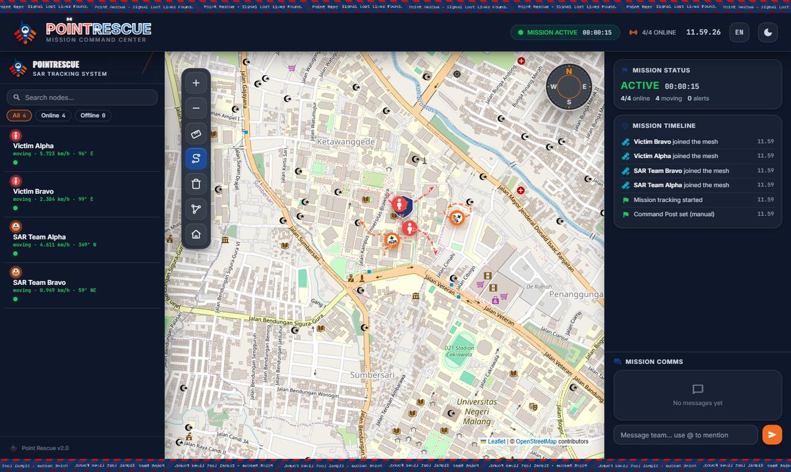
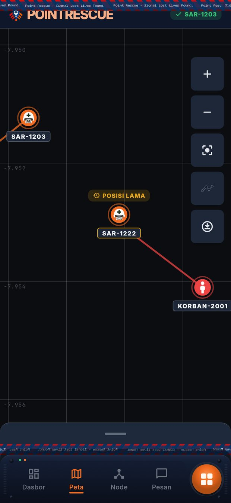

PKM-KC 2026Perbandingan alatTool comparison
Komparasi SistemSystem Comparison
Tiga alat untuk komunikasi dan pencarian di wilayah tanpa sinyal, dibandingkan pada tiga hal yang paling menentukan di lapangan. Three tools for communication and search where there is no signal, compared on the three things that matter most in the field.
Tabel perbandingan tiga alat pada tiga kriteriaComparison table of three tools on three criteria
| AlatTool FiturFeature |
Sistem kamiOur system
|
Handy Talky
|
Meshtastic
|
|---|---|---|---|
|
Pull & PlayLangsung aktif tanpa menu?Switches on with no menu?
|
YaYes
POINTRESCUEReed switch magnetikMagnetic reed switchTarik, langsung aktifPull, and it is on
|
TidakNo
Handy TalkySaklar on-off biasaOrdinary on/off switch
|
TidakNo
MeshtasticSaklar on-off biasaOrdinary on/off switch
|
|
Dashboard PencarianSearch DashboardPosisi korban terlihat di peta?Victim positions shown on a map?
|
YaYes
POINTRESCUETracker visual koordinat GPSVisual tracker of GPS coordinatesPeta taktis dengan jejak gerakTactical map with movement trails
|
TidakNo
Handy TalkyKomunikasi radio sajaRadio communication onlyPosisi disebut manual lewat suaraPositions are called out by voice
|
YaYes
MeshtasticAplikasi bawaan MeshtasticMeshtastic's built-in appDirancang untuk penggunaan umumBuilt for general use
|
|
Rp
Hemat BiayaLow CostTerjangkau untuk dibawa banyak orang?Affordable enough to carry in numbers?
|
YaYes
POINTRESCUE< Rp 500 ribu< Rp 500 thousandperkiraan per unitestimated per unit
|
YaYes
Handy TalkyRp 120–300 ribuRp 120–300 thousandperkiraan per unitestimated per unit
|
TidakNo
MeshtasticRp 1–2 jutaRp 1–2 millionperkiraan per unitestimated per unit
|
Kriteria terpenuhiCriteria met |
POINTRESCUE3/3 |
Handy Talky1/3 |
Meshtastic1/3 |
AdaYes Tidak adaNo Harga adalah perkiraan per unit.Prices are estimates per unit.
Pull & Play
Tarik, dan perangkat langsung menyala.Pull, and the unit switches on.
Pada node korban, sakelar magnetik jenis reed switch ditahan oleh magnet pada tali penarik. Selama magnet di tempatnya, perangkat diam dan hemat daya. Begitu tali ditarik, magnet menjauh dan perangkat langsung aktif serta memancarkan koordinatnya — tanpa menu, tanpa aplikasi, tanpa konfigurasi. On the victim node, a magnetic reed switch is held by a magnet on a pull tab. While the magnet stays in place the unit sleeps and saves power. Pull the tab and the magnet moves away: the unit switches on at once and starts transmitting its coordinates — no menu, no app, no setup.
Handy Talky dan Meshtastic dinyalakan dengan saklar on-off biasa. Dalam kondisi panik, tidak ada waktu untuk membuka menu. A Handy Talky and Meshtastic are switched on with an ordinary on/off switch. In a panic there is no time to open a menu.
-
Ditahan magnetHeld by the magnetPerangkat diam, hemat dayaUnit sleeps, saving power
-
Tali ditarikTab pulledMagnet menjauh dari sakelarMagnet leaves the switch
-
AktifActiveMemancarkan koordinatTransmitting coordinates
Skema sederhana — bukan gambar teknikSimplified schematic — not an engineering drawing
Dashboard pencarianSearch dashboard
Posisi korban tampil di peta posko.Victim positions appear on the post's map.
Gateway di posko mengumpulkan semua paket yang terdengar di jaringan, lalu dashboard operator menampilkannya: daftar node daring dan luring, peta taktis dengan jejak gerak, serta pesan dua arah. Semuanya berjalan tanpa internet — ubin peta tersimpan lokal. Personel di lapangan melihat gambaran yang sama lewat aplikasi Android. The gateway at the post collects every packet heard on the network and the operator dashboard shows it: online and offline nodes, a tactical map with movement trails, and two-way messages. All of it runs without internet — map tiles are stored locally. People in the field see the same picture in the Android app.
Handy Talky hanya membawa suara, sehingga posisi harus disebutkan manual lewat radio. Meshtastic punya aplikasi bawaan, tetapi dirancang untuk penggunaan umum, bukan khusus operasi pencarian dan penyelamatan. A Handy Talky carries voice only, so positions have to be called out over the radio. Meshtastic has its own app, but it is built for general use, not specifically for search and rescue.


Hemat biayaLow cost
Cukup murah untuk dibawa banyak orang.Cheap enough to carry in numbers.
Perkiraan harga per unit pada satu skala. Unit yang murah bisa dibagikan ke lebih banyak personel — bahkan warga terdampak. Estimated price per unit on one scale. A cheaper unit can be handed to more responders — even to affected residents.
Batang POINTRESCUE menunjukkan batas atas: harganya kurang dari Rp 500 ribu. The POINTRESCUE bar shows an upper bound: it costs less than Rp 500 thousand.
Rupiah per unit, skala 0 – 2 juta.Rupiah per unit, scale 0 – 2 million.
Lihat langsungSee it for yourself
Perbandingan ini hanya pada tiga kriteria di atas dan bukan penilaian menyeluruh atas tiap alat. Harga adalah perkiraan per unit dan dapat berbeda menurut merek, tempat membeli, dan waktu. Nama dan merek pembanding milik pemiliknya masing-masing; POINTRESCUE tidak berafiliasi dengan mereka. This comparison covers only the three criteria above and is not a full assessment of each tool. Prices are estimates per unit and can differ by brand, shop and time. The names and brands of the other tools belong to their owners; POINTRESCUE is not affiliated with them.
PKM-KC 2026 · Fakultas Ilmu Komputer
Universitas Brawijaya
PKM-KC 2026 · Faculty of Computer Science
Universitas Brawijaya